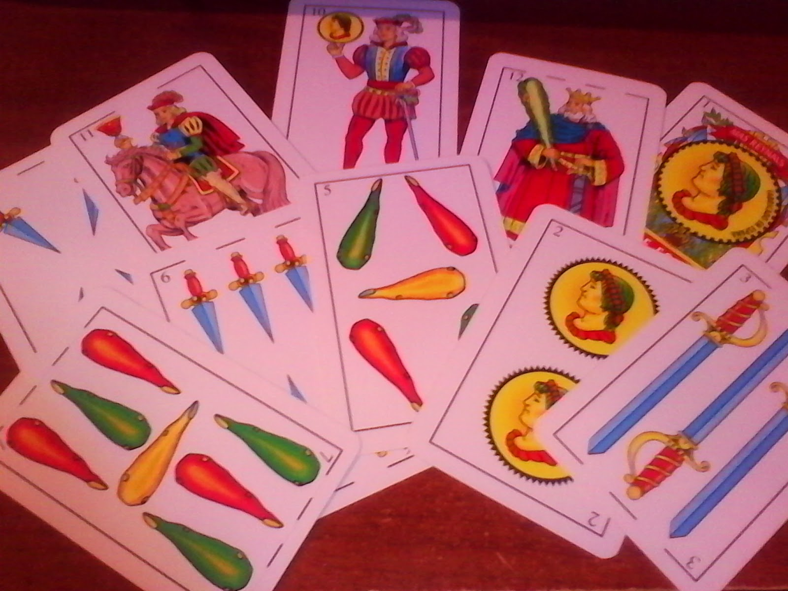
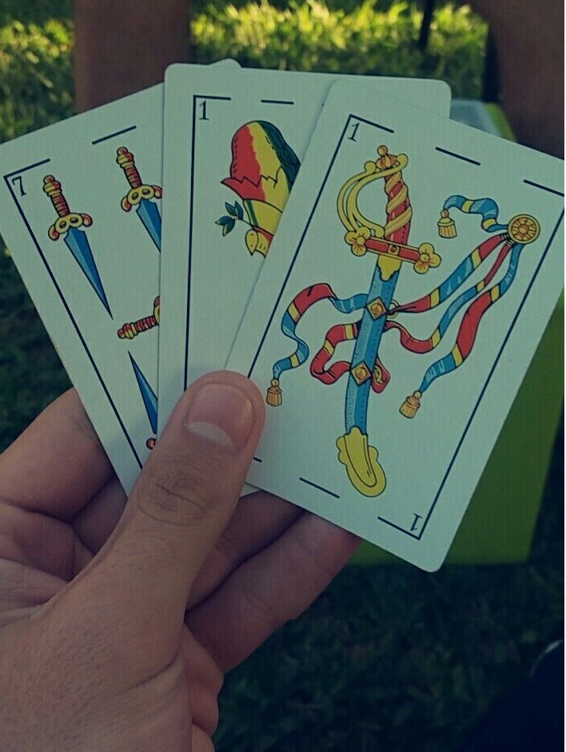

Consejos para jugar mejor a Caída
En Caída hay suerte, pero gana más seguido quien tiene memoria y paciencia. Estos consejos salen de las propias reglas y sirven igual contra la máquina que contra tus panas.
1. Piensa en el que te sigue
A tu carta solo le puede dar caída el jugador que juega justo después de ti, y en esa misma mano. Antes de tirar, pregúntate si él puede tener una carta igual. Si ya viste salir varias de ese valor, el riesgo es menor; si no ha salido ninguna, es mayor.
Al revés también vale: el jugador que juega antes que tú es tu oportunidad. Cada carta que tira es una caída posible para ti, así que no te apures a gastar las cartas que podrían darle caída.
2. Cuenta las cartas
Cada valor tiene cuatro cartas, una por palo. Llevar la cuenta de lo que ya salió te dice qué es seguro tirar. Si ya salieron tres reyes y tienes el cuarto, nadie te puede hacer caída con él: es una carta "muerta" que puedes tirar tranquilo. Si no ha salido ningún rey, tirar uno es darle al siguiente la oportunidad de sumar 4 puntos.

No hace falta memorizar todo el mazo: empieza por las figuras (10, 11 y 12), que son las que más puntos dan en una caída, y por los valores que tienes en la mano.
3. Las figuras pesan más
Una caída sobre un 1 o un 7 vale 1 punto, pero sobre un 10 vale 2, sobre un 11 vale 3 y sobre un 12 vale 4. Cuando tienes que tirar una carta sin llevarte nada, en general conviene soltar una baja y guardar las figuras para capturar o para el momento en que no haya peligro.
4. Al final de la mano, suelta lo peligroso
El reparto corta la caída: la última carta de cada mano ya no puede receive caída, porque después se reparten cartas nuevas. El que juega último en cada mano es el echador, así que cuando te toca echar, la última carta que tires es el mejor momento para deshacerte de un 12 o de cualquier carta que te daría miedo soltar antes. Eso sí: el primero de la mano siguiente puede capturarla, aunque sin puntos.
5. No le dejes la mesa servida al siguiente
La mesa limpia da 4 puntos a quien la deja vacía. Si después de tu jugada en la mesa queda una sola carta, o unas pocas que se pueden llevar de una vez con una captura múltiple, le estás regalando esa oportunidad al siguiente. Cuando puedas elegir, deja la mesa con cartas que no formen escalera.
Y cuando la mesa tiene pocas cartas, búscala tú: una captura que vacíe la mesa vale 4 puntos, y una caída que la vacíe, sus puntos de la caída más 4 de la mesa limpia. Recuerda que en el último reparto del ciclo ya no hay mesa limpia.
6. Las capturas también suman
Capturar no da puntos en el momento, pero cada carta cuenta en el conteo del final del ciclo. Entre dos jugadores, cada carta por encima de 20 es un punto; entre cuatro, por encima de 10. Una captura múltiple que se lleva cuatro o cinco cartas puede valer al final más que una caída.
7. La última captura se lleva la mesa
Cuando se acaba el mazo, las cartas que quedan en la mesa son del último jugador que capturó. En el último reparto, ser el último en llevarse algo puede darte varias cartas de regalo y cambiar el conteo. Si tienes una carta que puede capturar, a veces conviene guardarla para el final.
8. Lee los cantos de los demás
Cuando alguien tiene canto, sabes de qué tipo es, y eso dice mucho de su mano. Una Ronda o una Vigía tienen una pareja: si el jugador que te sigue tiene una y tira, por ejemplo, un 5, puede que le quede otro 5 en la mano, así que piénsalo dos veces antes de tirar ese valor justo antes que él. Una Patrulla son tres cartas seguidas: cuando tira la primera, ya imaginas por dónde van las otras dos.

9. Con Caída mata canto, guarda la respuesta
Si juegas con esta opción y el que juega antes que tú tiene canto, tu momento es su tercera carta: si le haces caída con tu siguiente jugada, su canto se anula. Guardar una carta que pueda darle caída en vez de gastarla antes, puede quitarle de 1 a 8 puntos a un rival.
10. Cerca de 24, cada punto cuenta
La partida termina en el momento en que alguien llega a 24, sin esperar al conteo. Si a un rival le faltan pocos puntos, una sola caída o un canto pueden darle la victoria, así que cuídate más que nunca de lo que tiras. Y si el que está cerca eres tú, recuerda que un canto que te lleve a 24 se pide solo (salvo con Caída mata canto; en Experto, al anunciarlo bien): si ningún rival tiene canto, ganas sin seguir jugando.
11. En modo Experto, sin apuro pero sin dormirte
Con Viveza, observa lo que se anuncia y lo que se llevan: puedes acusar desde el avatar rival, pero acusar mal cuesta un punto. Una captura solo se acusa antes de que juegue el siguiente. Los anuncios siguen abiertos hasta la primera jugada de la mano siguiente. La pausa final de 3 segundos también permite acusar los hechos todavía abiertos.
En Experto tú eliges qué te llevas y cada error cuesta un punto, así que mira bien la mesa antes de tocar. Tienes 10 segundos: si se acaban, se juega lo que alcanzaste a marcar. Anuncia tu canto solo cuando estés seguro de su tipo, porque un anuncio equivocado resta puntos. Y si juegan con soplado, vigila las cartas repetidas en la mesa: cualquiera menos quien las dejó puede llevárselas en cualquier momento.